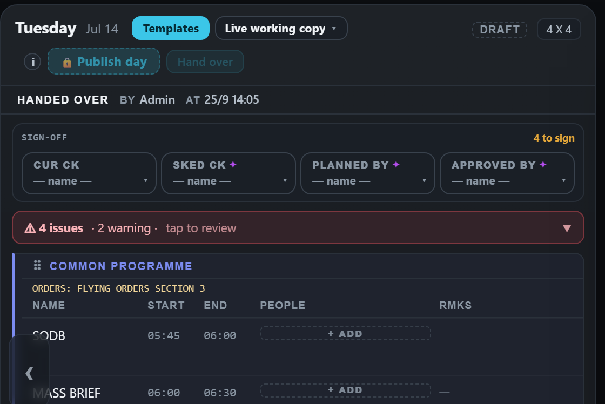
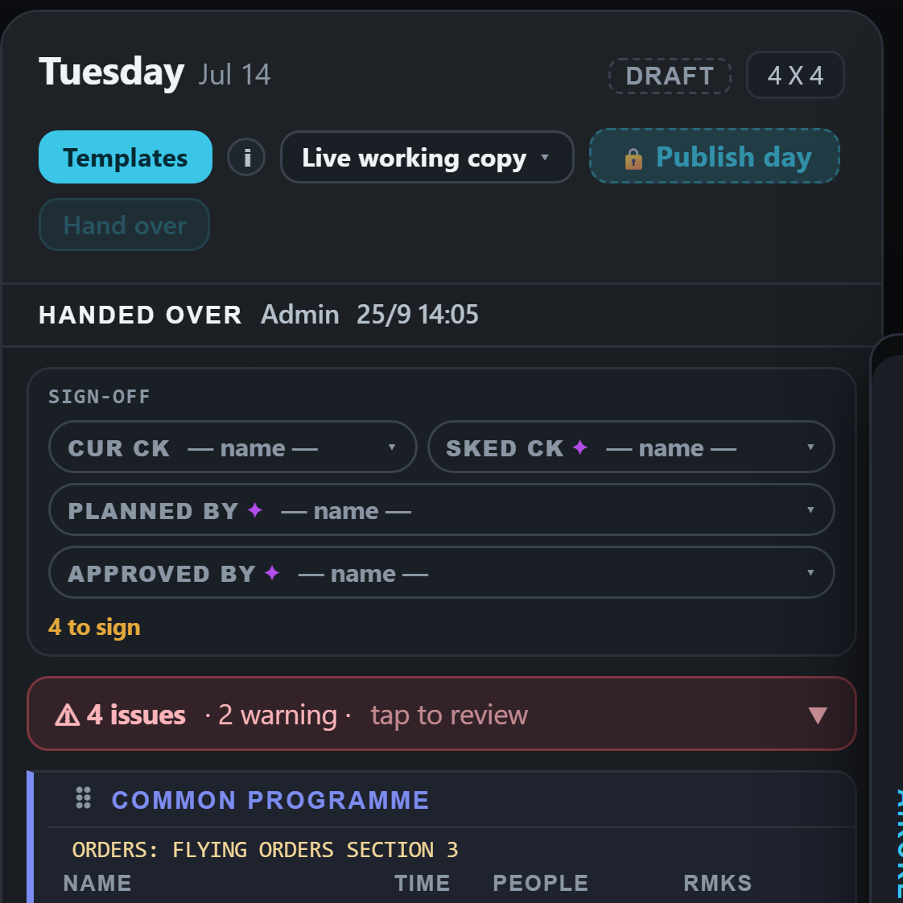
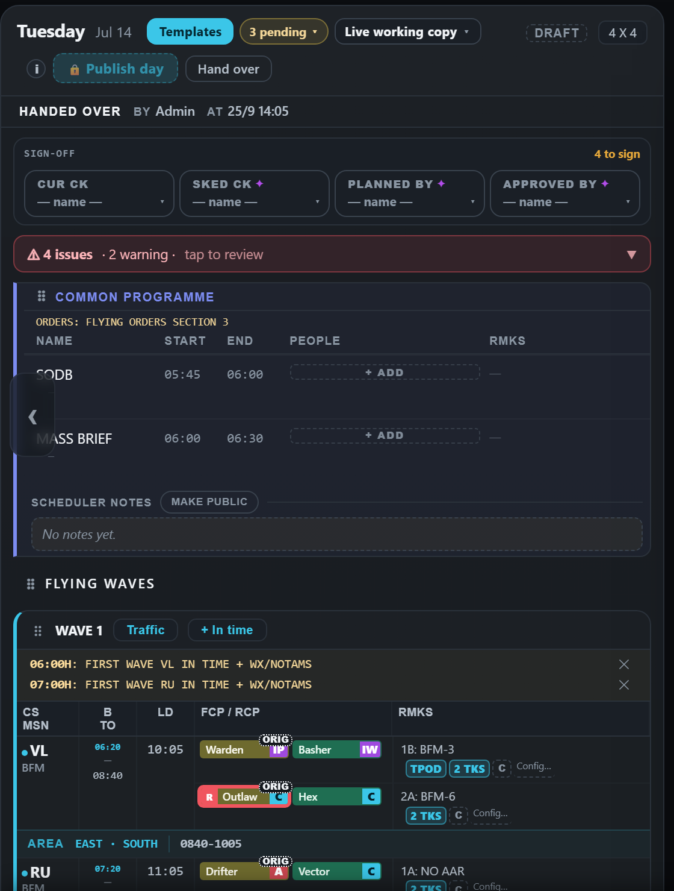
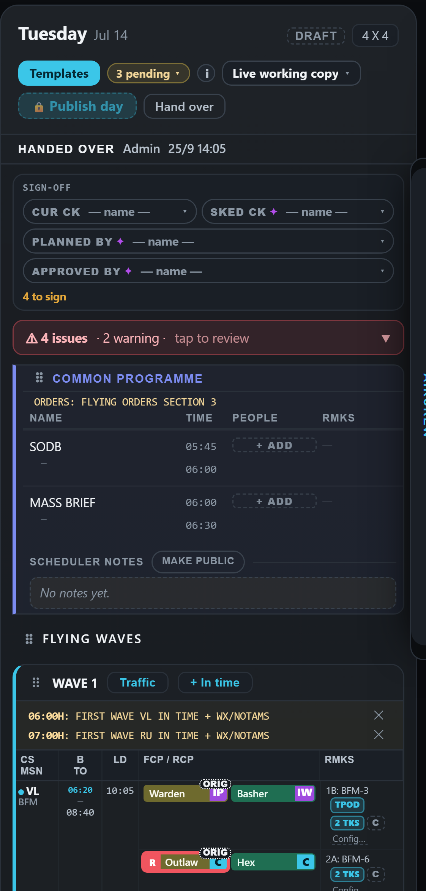
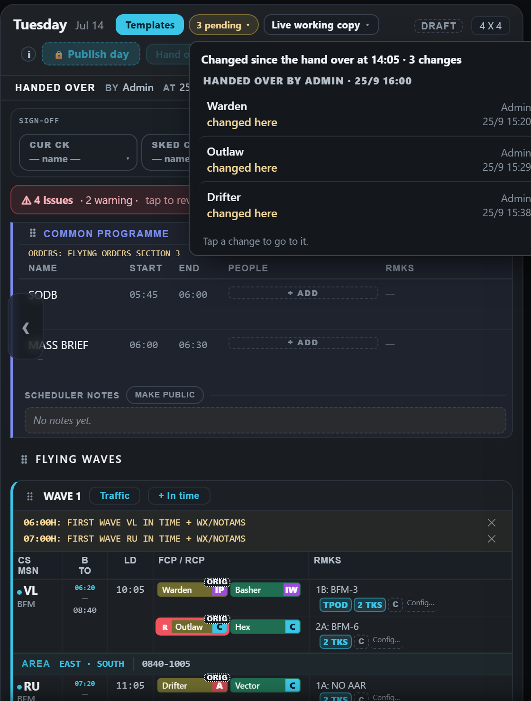
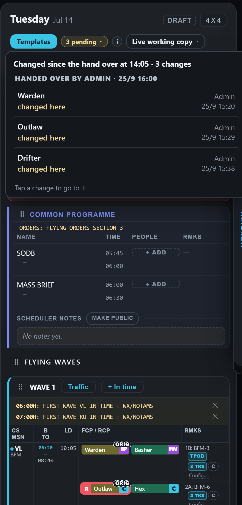
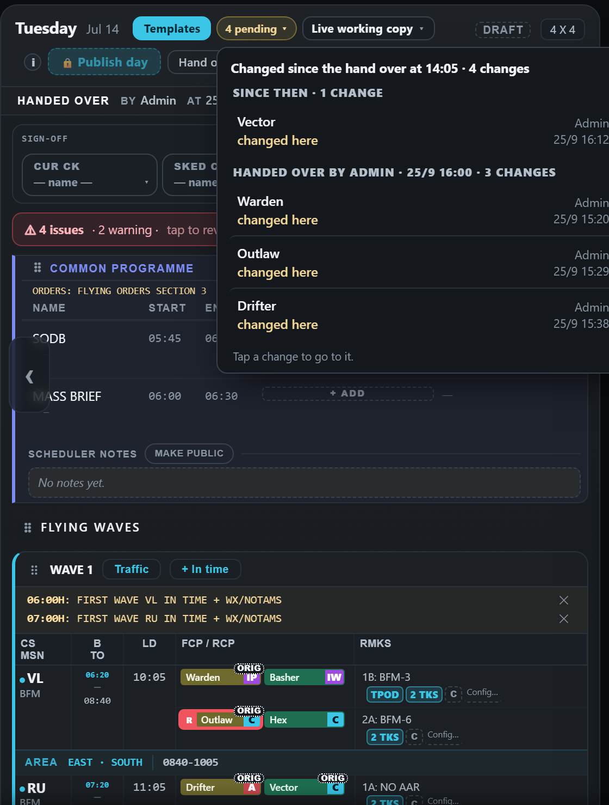
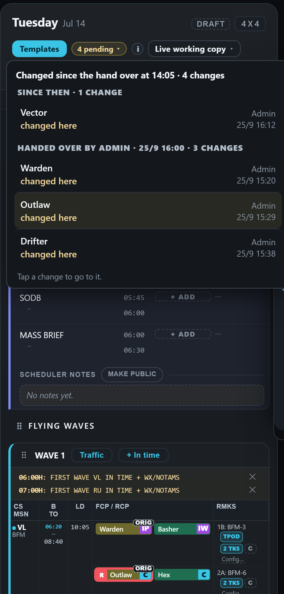
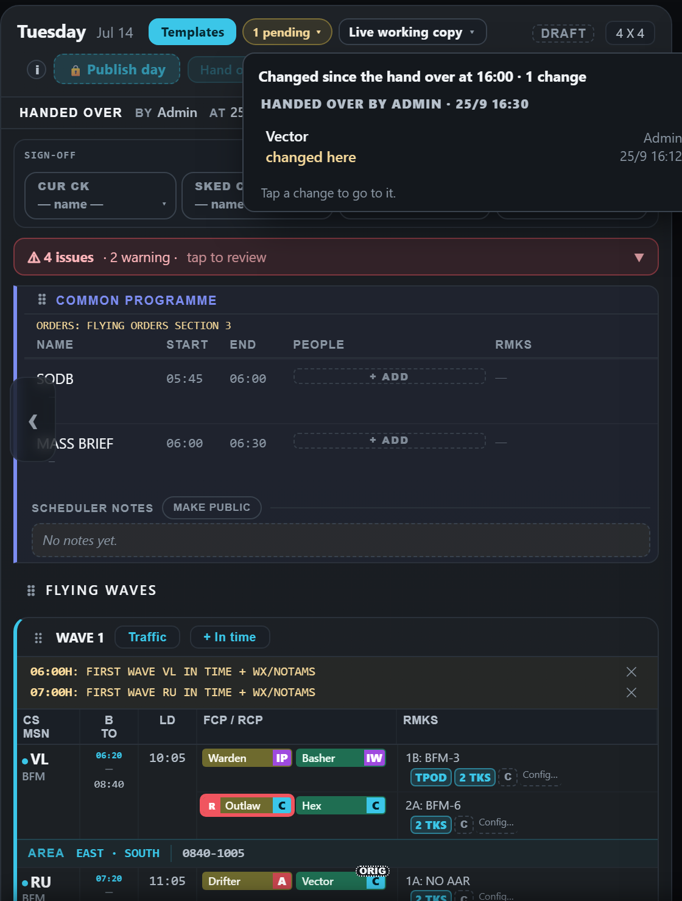
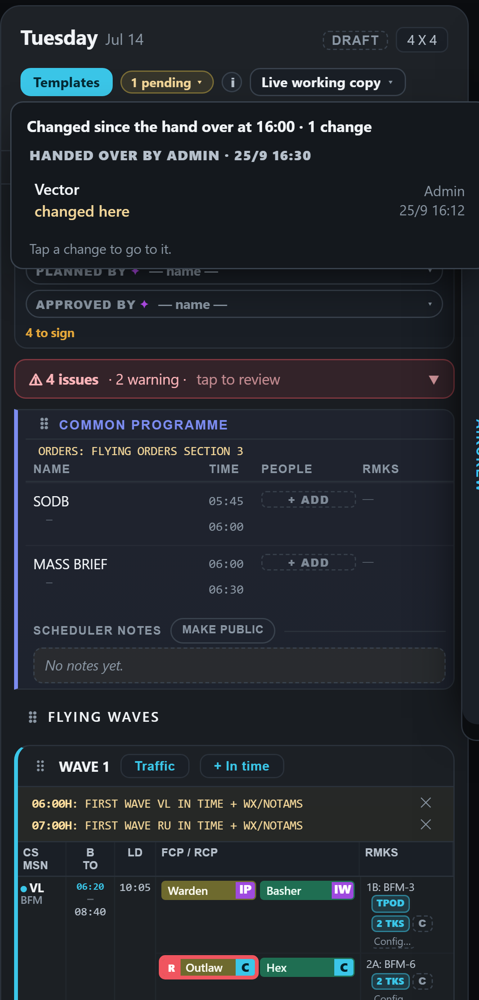

Hand over — two schedulers on a day not yet published (mock-up)
Drawn on the real app (the demo week). Everything new is drawn in: the Hand over button beside Publish day, the line under the heading, the pending button, the dotted ORIG tags and the open list. The idea: every hand over is kept, and the highlights show what changed since the hand over before the latest one — the last person's work — so pressing Hand over after your own changes never wipes what the next person needs to see.
Who reads "Admin" (the shared login) until the database brings personal logins; then it reads the callsign, and each person can see "what changed since YOU last looked" with no button at all.
1 · You build Tuesday and press Hand over
The line under the heading records it: handed over by Admin at 14:05. Nothing is highlighted, and Hand over is greyed — there is nothing new to hand over.


2 · Scheduler B changes three things
"3 pending ▾" appears and the three changed pucks wear a dotted ORIG tag. Hand over is live again.


3 · B presses Hand over — this is what YOU see when you open Tuesday
The line now reads 16:00, "showing changes since 14:05". B's three changes stay highlighted — pressing Hand over did not wipe them. The list groups them under B's hand over.


4 · You change one more thing
"4 pending": your change sits under "Since then", B's three under their hand over — so you can tell your own work from theirs.


5 · You press Hand over — this is what B sees next
Now only YOUR change is highlighted ("showing changes since 16:00"). B's earlier three are no longer marked — B made them, and you have seen them.

